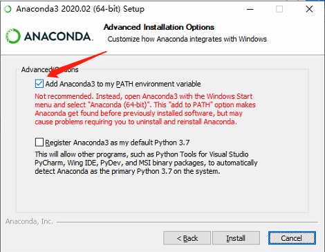
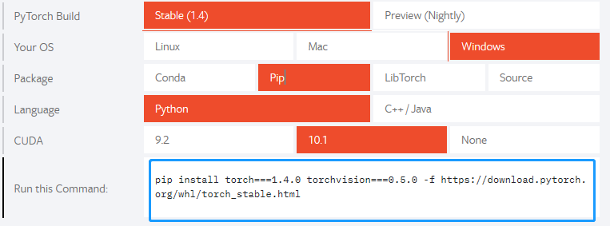
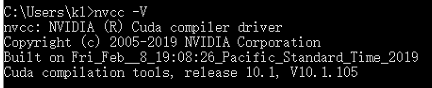
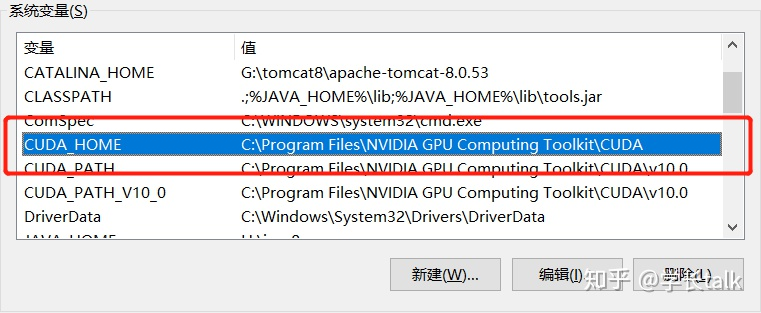
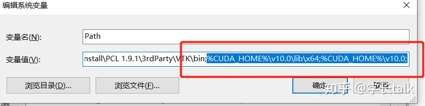
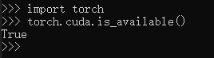

写在开头! 之前配置环境都需要选择对应的cuda版本和cuDNN版本，有可能以后Anaconda丰富了之后，可以直接一键配置，但是还是自己动手来的踏实，这里做个记录，方便以后配置
1.流程目录
2.各子流程详解
2.1.Anaconda配置Python环境
Anaconda官网下载链接这个直接去官网下载就好了，Python要下载稳定的版本!
安装时需要注意了! 下图箭头指向最好是打上 √ ，避免之后还需要再配置环境变量

2.2.PyCharm community下载
Pycharm官网下载链接点击链接下载就好了，个人用户community就够了！
2.3.Torch and TorchVision下载安装
2.3.1.简介
一般说的PyTorch框架，一般指的就是Torch库，和TorchVision库，其中Torch库包含了torch的常用操作，TorchVision包含有
- torchvision.datasets: 有常用的计算机视觉数据集，像MNIST,CIFAR等等，还有加载数据集的dataloader等常用的数据加载函数
- torchvision.models; 有常用的分类器模型，例如ResNet系列，VGG系列，Inception等等，因为有预训练的模型，修改一两行代码就可以很方便的对一些分类数据进行迁移训练，而且效果非常好！具体的使用方法可以看我这篇文章《使用TorchVision快速的开发分类器模型》
- torchvision.transforms: 常用的图像增强方式，例如随机切割，旋转，数据类型转换（Numpy，tensor，PIL.Image互转）
- torchvision.utils: 一些常用工具包
2.3.2.配置
这里给出两种配置方案：
1、无脑版：直接PyTorch官网，按照选项选择你需要的版本，然后把命令行直接复制到cmd中执行即可:

2、高级进阶版：在PyTorch的官方服务器上下载你所需要的版本，下载成功后，cmd索引到下载文件夹位置，使用pip命令安装对应.whl文件即可
这里以官网最新版本为准进行后续的安装Torch==1.4.0 TorchVision==0.5.0
2.4.CUDA下载配置
CUDA 10.1下载链接下载后安装即可，选择标准版就行，要记住安装的路径，后边安装cuDNN需要用!
安装成功之后，打开命令行输入nvcc -V，出现如下图即安装成功：

若安装失败则大多是环境变量的配置问题，不要慌，配就完事了~
先配置CUDA_HOME:

再配置path：

到这里再输一次nvcc -V应该就可以看到上图了
2.5.cuDNN下载配置
这里注意cuDNN的版本一定！一定！一定！要与CUDA的版本对应。注意：需要注册登陆下载
cuDNN下载链接
下载完成之后，解压将bin lib include三个文件夹拷贝到 CUDA的安装目录下，如果你没有在安装CUDA的过程中修改安装路径，则应该是 C:\Program Files\NVIDIA GPU Computing Toolkit\CUDA\v10.1路径下。
到此就安装成功了！，下一步检查是否可用
2.6.检查是否配置成功
简单点的方法：在cmd的Python环境下import torchtorch.cuda.is_available()()
若出现True，则成功！
